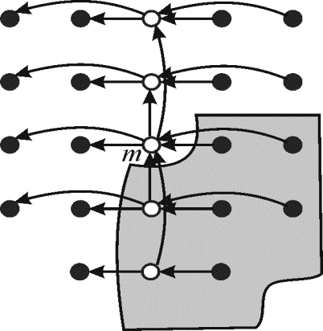

Coarsen the base case of P-MERGE
In order to coarsen the base case of P-MERGE, switch to the ordinary serial sort when the size of the array is small. In other words use quick sort if size of the array is significantly small.
In practice, the recursion is coarsened to minimize overheads. P-MERGE could be coarsened by using function calls and in-lining near the leaves of recursion, rather than spawning. It is used to make algorithm more efficient.
Algorithm:
The following procedure merges two sub arrays that lie within the same array.
The procedure P-MERGE sorts an array T and stores the output in array A. The array would be frequently divided into sub arrays. The lower and upper bounds of the concerned sub arrays are p1, r1 and p2, r2. The lower bound of the output array is p3.
// Parallel merging
P-MERGE
//calculate the size of sub arrays and stores them in n1 and n2
//check the combined size of two arrays. If they are very small then do the quick sort
// coarsen
if is very small
//apply the quick sort (refer the text book)
Quick-Sort
//to insure that is larger than .If not then swap.
else if 
//check if the size of the first sub array is lesser than the size of the second sub
//array then exchange the arrays bounds
exchangewith

exchangewith
exchangewith
//check if array is empty
else if
return
else
//get the mid of the first sub array
//apply the binary search to find the mid location of the second sub array
BINARY_SEARCH
//get the mid-point for the output array so that the element must be placed at
// proper location in sorted array
//store the elements in the output array
//parallel recursive call to merge the entire arrays in parallel
Spawn P-MERGE
P-MERGE
sync
P-Merge uses the procedure BINARY_SEARCH to find the mid of the array. The location of the mid element x is found in the array T that has the lower bound p and upper bound r.
BINARY_SEARCH
//set the pointer low to the startindex of thearray
//set high to p or r+1; whichever is greater
//check whether elements are there in the array
while
//set the mid to the middle of the array
//check if the parameterized element is smaller than the mid element
if
//update value of high to mid
else
//update value of low to one more than mid
return
In the above algorithm of P-MERGE, coarsen start at first “if” clause and close after the Quick-sort. Remaining part of the algorithm is same as old version of P-Merge.
Here the base case form coarsenis “the size of the array is small” and to operate this condition, quick-sort concept comes in picture.
Illustrate the example of P-MERGE:
When size of two arrays is large, then the array get merged by using the P-MERGE(). If size of two arrays is not too large then it gets sorted by quick sort.
Suppose T1 and T2 are two sorted array which has to be merge by P-MERGE() function defined above to get a single sorted array.
In above sorted arrays T1 and T2, the value of p1and p2 is 0 and value of r1 and r2 is 4.
In P-MERGE( ) function the statement inside else part get execute. First calculate the value of which is the mid element of array T1.
Therefore, the mid element of T1 array is at index 2 that is 40.
After finding the , find the first element from T2 array which is greater than T1(q1) that is . Call BINARY_SEARCH() function to find a .
So call BINARY_SEARCH function with the parameters BINARY_SEARCH. In BINARY_SEARCH() first set the low and high.
After this use while loops to check whether low is lesser than high or not. In this case condition is true therefore calculating mid value of T2.
This implies that mid element of T2 array is at index 2 that is 34. Then check that is
As if condition is false, else block of BINARY_SEARCH() function executes. Now value of low is updated to mid+1 that is 3. Again while loop iterate and check whether low is lesser than high or not that is. So again mid value is calculated.
This implies that new mid element of T2 array is at index 4 that is 78. Then check that is
As if condition is true, if block of BINARY_SEARCH() function executes. Now value of high is updated to mid that is 4. Again while loop iterate and check whether low is lesser than high or not that is. So again mid value is calculated.
This implies that new mid element of T2 array is at index 3 that is 65. Then, checkthat is
The if condition is true. Therefore if block of BINARY_SEARCH() function executes. Now value of high is updated to mid that is 3.Then again while loop iterate and check whether low is lesser than high or not that is . This time the condition is false. Therefore value of high return to P-MERGE() which is .
Now, calculate the position of 
Now, store index
elements of T1 array into A array at index.
Now again call Spawn P-MERGE and
P-MERGE. This time,
in Spawn P-MERGEelse
if condition gets true because therefore
both these sub-array exchange. The P-MERGEget sorted
by the Quick-sort() because is very
small that is 4. Hence at last, the sorted array A is as
follow:
Pseudocode for an efficient multithreaded merging procedure that uses
median finding procedure
Work is defined as total time required for completing the entire multithreaded computation on a single processor.
Span is defined as the maximum time required for completing the strands along any path in the directed acyclic graph (DAG). It is an expensive path which contains maximum number of strands.
Work is the execution time of a computation on a single
processor. Consider it as .
.
Now suppose there are unlimited numbers of processors. Then the
span is denoted by
and,
that is  gives the
parallelism of the multithreaded computation.Median is
defined as a value which is present or lie at the mid of any
series. Example as shown below: The series
shown above is the series of seven elements. 23 is the first
element of this series and 98 is the median of this series.
gives the
parallelism of the multithreaded computation.Median is
defined as a value which is present or lie at the mid of any
series. Example as shown below: The series
shown above is the series of seven elements. 23 is the first
element of this series and 98 is the median of this series.Algorithm:
// Parallel merging
P-MERGE
//calculate the size of sub arrays and stores them in n1 and n2
//check the combined size of two arrays. If they are very small then do the quick sort
// coarsen
if is very small
//apply the quick sort (refer the text book)
Quick-Sort
//to insure that is larger than .If not then swap.
else if
return
else
//call function to find the median of two arrays
Val=TWO-ARRAY-MEDIAN
for j=0 to n1
if val==T[j]
j
//apply the binary search to find the mid location of the second sub array
BINARY_SEARCH
//get the mid-point for the output array so that the element must be place at proper
//locationin sorted array
//storethe elements in theoutput array
//parallel recursive call to merge the entire arrays in parallel
Spawn P-MERGE
P-MERGE
sync
// binary search to find the first element larger than x in second sub-array.
BINARY_SEARCH
//set the pointer low to the startindex of thearray
//set high to p or r+1; whichever is greater
//check whether elements are still remaining to be checked in the array
while
//set the mid to the middle of the array
//check if the parameterized element is smaller than the mid element
if
//update value of high to mid
else
//update value of low to one more than mid
//return index of first element in second sub array which is greater than x
return
Consider the result of the exercise 9.3-8 in textbook,
// function which find two array median
TWO-ARRAY-MEDIAN
//Call FIND-MEDIAN() function to find the median.
median=FIND-MEDIAN
//check median found or not, if not exchange both sub arrays
if median == NOT-FOUND
//Again Call FIND-MEDIAN() function to find the median.
median=FIND-MEDIAN
//return median to calling function
return median
// finding median
FIND-MEDIAN
//check low is smaller than high or not
if
//return to calling function
return NOT-FOUND
else
//find mid value index
//compare value of k, n and value of Tarray at different index
ifand
return
else if
and
return
else if
//again call function to find median in lower half
return FIND-MEDIAN
else
//again call function to find median in upper half
return FIND-MEDIAN
Analyzing the above algorithm:
Here three methods which are work, span and parallelism are used for analyzing the algorithm which is as follow:
Work:
Work of the above Mt-FLOYD-WARSHALL (W) will be same as that of the execution time of its serialization. So in order to compute work, parallel for loop must be replaced with ordinary for loop.
TWO-ARRAY-MEDIUM will cost additional work of because this
forms a binary tree structure and a binary tree structure takes
that much of time.
because this
forms a binary tree structure and a binary tree structure takes
that much of time.
Consider the analysis of multithreaded merge sort in the textbook,
And,
Now in analyzing part the only difference is that the addition
work of needed due
to the TWO-ARRAY-MEDIUM.
Therefore total work  will be,
will be,
Hence total work of modified P-MERGE is 
Span:
TWO-ARRAY-MEDIUM will cost additional span of .
.
Therefore total span will be,
Hence span of modified P-MERGE is.
Parallelism:
Parallelism is the ratio of work by span that is ratio of
by.
Therefore,
Parallelism=
Hence parallelism of modified P-MERGE is.
An efficient multithreaded algorithm for partitioning an array around a pivot
Work is defined as total time required for completing the entire multithreaded computation on a single processor.
Span is defined as the maximum time required for completing the strands along any path in the directed acyclic graph (DAG). It is an expensive path which contains maximum number of strands.
Work is the execution time of a computation on a single
processor. Consider it as.
Now suppose there are unlimited numbers of processors. Then the
span is denoted by
and,
that is gives the
parallelism of the multithreaded computation. Pivot element
in the array is that element in array where actual calculation,
operation like sorting in quick sort starts. In quick sort pivot
element is the element which is placed at their proper correct
position (in sorted order) in array.Consider the procedure of Partition, section 7.1 of the text book,
The algorithm below is going to use the concept of partition and multithreaded algorithm. In partition procedure there is two ‘for’ loops. So here those loops are going to be parallel to make it efficient multithreaded algorithm.
Algorithm:
// partition in parallel fashion
Parallel_partition
//check whether array having only one element
if
return 
//taking auxiliary arrays array ,,
//use for loop to copy elements in auxiliary array
parallel for to
if
else
if
else
//call function to apply sum operation
parallel_prefix_sum
parallel_prefix_sum
//loop to compare all element of auxiliary array X[] with x.
parallel for to
//check ith index element of X [ ] array is lesser than x.
if
//check ith index element of X [ ] array is greater than x.
else if
return 
The example below shows the concept and implementation of parallel prefix sum.
There is a set of  elements say
and
elements say
and
 be
another set which is defined on element set
using binary associative operation.
be
another set which is defined on element set
using binary associative operation.
Set will be defined as,
for .
For example, the set is given below,
=binary addition
Then set will be
given by,
// applying sum operation on parallel partition arrays
Parallel_prefix_sum
//Check if number of element in array is 1
if
else
parallel for to
to
parallel_prefix_sum
parallel forto
if
else if  is even
is even
else
return
Analyzing the above algorithm:
Three methods work, span and parallelism are used for analyzing the algorithm.
Work:
Work of the above algorithm can be calculated by computing the execution time of its serialization.
As parallel for loop of the above algorithm are not nested,
… … (1)
Work of parallel_prefix algorithm can be calculated by replacing the parallel for loop with ordinary for loop and then computing the running time of algorithm.
Since parallel for loop of the parallel_prefix algorithm are not nested,
Applying master theorem,
… … (2)
Putting value of equation (2) in (1)
… … (3)
Hence total work of Parallel_partition algorithm is
Span:
Span of the above algorithm will be given by,
… … (4)
Span of the parallel_prefix_algorithm will be given by,
Applying master theorem (In the analysis of the algorithm, master theorem gives the solution in asymptotic term for the recurrence relation),
… … (5)
From equation (4) and (5),
Hence span of Parallel_partition algorithm is
Parallelism:
Parallelism is the ratio of work by span that is ratio of
by.
Parallelism=
=
=
Hence parallelism of Parallel_partition algorithm is
Multithreaded version of RECURSIVE- FFT
Fast Fourier transform is an algorithm to calculate discrete Fourier transform (DFT) and also to calculate inverse discrete Fourier transform.
Fourier transformation changes time to frequency and frequency to time. It is one of the important numerical algorithms.
In Discrete Fourier Transformation (DFT), the polynomial that should be evaluated is given as:
Here, the polynomial has a degree bound of n and the roots of unity in the complex form will be. If the result is represented as, then DFT for the given polynomial can be given as:
The DFT given above is for 1-dimension only. If the polynomial has more than 1 dimension, then discrete Fourier transform for d-dimensions can be given as:
The above expression requires  operation
for evaluation. This means that it requires execution
time.
operation
for evaluation. This means that it requires execution
time.
The FFT can do the same work in time. In
other words, can say that FFT algorithm only require operations.
The FFT work on divide and conquer rule which divide polynomial
into polynomial of odd and even indexes coefficients of  .
.
Work is defined as total time required for completing the entire multithreaded computation on a single processor.
Span is defined as the maximum time required for completing the strands along any path in the directed acyclic graph (DAG). It is an expensive path which contains maximum number of strands.
Work is the execution time of a computation on a single
processor. Consider it as.
Now suppose there are unlimited numbers of processors. Then the
span is denoted by
 and,
that is gives the
parallelism of the multithreaded computation.
and,
that is gives the
parallelism of the multithreaded computation.Multithreaded version of RECURSIVE-FFT:
Consider the algorithm Recursive-FFT on section 30.2 from the textbook. Given below is the multithreaded version of this algorithm. To make it multithreaded, spawn keyword used before the recursive function to make its implementation in parallel.
// multithreaded version of recursive FFT
RECURSIVE-FFT
//Find length of polynomial which must be a power of 2
// check length is equal to 1 or not.
if
return 
//divide polynomial into polynomial of odd and even indexes coefficients
// using the concept of parallelization to making algorithm multithreaded
Spawn  RECURSIVE-FFT()
RECURSIVE-FFT()
RECURSIVE-FFT()
//use loop to combine the output of even and odd index terms subscript.
forto
// y is assumed to be a column vector
return 
Analyzing the above algorithm:
Here three methods which are work, span and parallelism are used for analyzing the algorithm which is as follow:
Work:
Work of the above algorithm can be calculated by computing the running time of its serialization.
That is the other than recursive call, there is work of
because
of the ‘for’ loop.
Therefore,
Applying master theorem (In the analysis of the algorithm, master theorem gives the solution in asymptotic term for the recurrence relation),
So,
Total work will be as
follow (in above recursion equation the first part make the tree
structure having length (lgn))
… … (1)
Hence total work of Multithread RECURSIVE- FFT is
Span:
Span of the above algorithm will be because
each of the call will has to do a minimum work of executing the
‘for’ loop in term of.
Therefore,
… … (2)
Hence span of Multithread RECURSIVE- FFT isParallelism:
Parallelism is the ratio of work by span that is ratio of
by.
Parallelism=
By EQUATION (1) and (2)
=
=
=
Hence span of Multithread RECURSIVE- FFT is.
Multithreaded version of Randomized selection
Randomized Selection:
It is a process used to find minimum element in an array which
has execution
time. It also depends on divide-and-conquer algorithms, similar to
quick sort. But Randomized selection processes only one side of
partition unlike quick sort which processes both sides of
partition. That is why the execution time of Randomized select is
instead of.
Work is defined as total time required for completing the entire multithreaded computation on a single processor.
Span is defined as the maximum time required for completing the strands along any path in the directed acyclic graph (DAG). It is an expensive path which contains maximum number of strands.
Work is the execution time of a computation on a single
processor. Consider it as.
Now suppose there are unlimited numbers of processors. Then the
span is denoted by
and,
that is gives the
parallelism of the multithreaded computation.Algorithm:
//consider the algorithm Randomized-Select on section 9.2 of the textbook
// randomize selection using parallel algorithmt
Parallel_randomized_select
//find number of element in array
//check size of array
if is very
less say
sort using any sorting algorithm
else
//select x element from array
Select a random element  from
from
//call function to divide the array
Parallel_partition
if
return A[k]
else if
return
spawn Parallel_randomized_select
else
return Parallel_randomized_select
sync
// parallel partitioning
Parallel_partition
//check whether array having only one element
if
return
//taking auxiliary arrays
array ,,
//use for loop to copy elements in auxiliary array
parallel for to
if
else
if
else
//call function to apply sum operation
parallel_prefix_sum
=parallel_prefix_sum
parallel for to
//check if ith index element of X [ ] array is lesser than x.
if
//check if ith index element of X [ ] array is greater than x.
else if
return
The example below shows the concept and implementation of parallel prefix sum.
There is a set of elements say
andbe another
set which is defined on element set
using binary associative operation.
Set will be defined as,
for .
For example,
Consider the set is given below,
=binary addition
Then set will be
given by,
// function calculation sum operation in parallel fashion
Parallel_prefix_sum
//check if array contains only one element.
if
else
parallel for to
parallel_prefix_sum
parallel for to
if
else if is even
else
returnAnalyzing the above algorithm:
Three methods work, span and parallelism are used for analyzing the algorithm.
Work: Work can be calculated by computing the execution time of its serialization.
Work of parallel randomized algorithm can be following recurrence,
… … (X)
Work of above Parallel partition can be calculated by replacing the parallel for loop with ordinary for loop and the computing of the running time of algorithm.
As parallel for loop of the above algorithm are not nested ,
… … (1)
Work of parallel_prefix algorithm can be calculated by replacing the parallel for loop with ordinary for loop and the computing of the running time of algorithm.
As parallel for loop of the parallel_prefix_algorithm algorithm are not nested,
Applying master theorem (In the analysis of the algorithm, master theorem gives the solution in asymptotic term for the recurrence relation),
… … (2)
Putting value of equation (2) in (1),
… … (3)
From (X) and (3),
Applying master theorem (In the analysis of the algorithm, master theorem gives the solution in asymptotic term for the recurrence relation),
Hence total work of Parallel_Randomized_Select algorithm
is.
Span:
Span of the Parallel_randomized_select algorithm are given by following recurrences.
… … (Y)
Span of the Parallel_partition algorithm will be given by,
 … … (4)
… … (4)
Span of the parallel_prefix_algorithm will be given by,
Applying master theorem,
… … (5)
From equation (4) and (5),
… … (6)
From equation (Y) and (6),
Hence span of Parallel_Randomized_Select algorithm is.
Parallelism:
Parallelism is the ratio of work by span that is ratio of
by.
Parallelism=
=
=
Hence parallelism of Parallel_Randomized_Select algorithm is.
Multithread SELECT Algorithm
The serial algorithms are executed on the uniprocessor system in which only one instruction is executed at a time. In order to reduce the execution time of algorithm, a multithread algorithm was evolved. A multithread algorithm executes on the multiprocessor system in which more than one instruction can be executed at a time.
Multithreading of the SELECT:
Work is defined as total time required for completing the entire multithreaded computation on a single processor.
Span is defined as the maximum time required for completing the strands along any path in the directed acyclic graph (DAG). It is an expensive path which contains maximum number of strands.
Work is the running time of a computation on a single processor.
Consider it as.
Now suppose there are unlimited numbers of processors. Then the
span is denoted by
The ratio of
and,
that is gives the
parallelism of the multithreaded computation.
Algorithm:
// consider the section 9.3 of the textbook.
// SELECT procedure using parallel algorithm concept.
Parallel_Selection
if 
//Return the first element as smallest element because array contains only one
//element
return
else
Divide elements of into groups, each group having 5
elements. Last group have remaining n mod 5 elements.
parallel forto
//Consider section 9.3 for selection algorithm
first sort each group using merge sort and then find median of each group
and also store it simultaneously into
//Consider section 27.3 for multithreaded merge sort
Calculate the median  among all
median of
among all
median of
 =Par-Partition
=Par-Partition
if
return
else if
return Par-Selection
else
return Par-Selection
Example:

Assume an array A contains 23 elements which is represented as small circles in the above figure. According to parallel_Selection algorithm first divide the elements into groups, each group containing 5 elements each. The last group contains n mod 5 elements.
Then sort each group using merge sort algorithm. The arrows shown that moves from larger element to smaller element. The white circle represents the median of that group. The white circle which is denoted by m is the median of the median. The elements in the shaded portion are greater than m.Analyzing the above algorithm
Three methods work, span and parallelism are used for analyzing the algorithm.
Work:
Work can be calculated by replacing the parallel for loop with ordinary for loop and calculating the running time of the algorithm.
According to the section 9.3,
The generalizations form of the above algorithm:
Hence, work of Parallel_Selection algorithm is.
Span:
Consider the analysis of multithreaded merge sort on page 803,
Span of the above algorithm can be given by,
=
Hence work of Parallel_Selection algorithm is.
Parallelism:
Parallelism is the ratio of work by span that is ratio of
by.
Therefore, Parallelism=
Hence work of Parallel_Selection algorithm is.